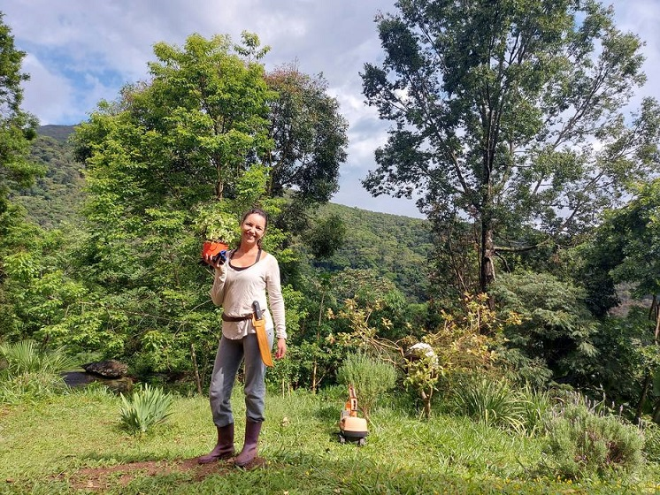

Projetos Destaque
Empreendendo do Campo à Cidade
Desenvolvido pela professora Ana Paula Lazzeris Ghellere, da Escola Municipal Serafin Machado de Souza, em São Miguel do Iguaçu, este projeto envolveu alunos do 3º ano do Ensino Fundamental I em atividades que destacaram o empreendedorismo sustentável, utilizando recursos como jogos educativos, palestras e confecção de brinquedos com materiais recicláveis.
A Rota do Milho: Do Campo à Cidade

Sob a orientação da professora Juliete Gomes da Silva Póss, da Escola Municipal Caetano Vezozzo, em Cambará, este projeto explorou a cadeia produtiva do milho, promovendo visitas a plantações, agroindústrias e supermercados, além da criação de um site educativo para compartilhar os aprendizados.
Exuberâncias do Campo, Sabores do Nosso Chão

A professora Idana Cristina Menon, do Colégio Estadual do Campo Nossa Senhora de Fátima, em Irati, desenvolveu este projeto com alunos do 7º ano, focando na alimentação saudável e na valorização dos produtos cultivados no campo, culminando na criação de uma revista e folder compartilhados com escolas urbanas.